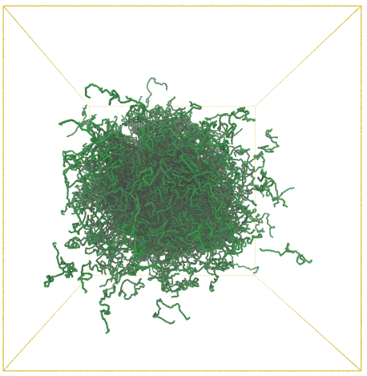
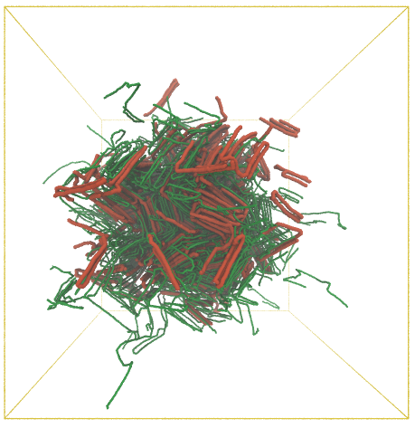
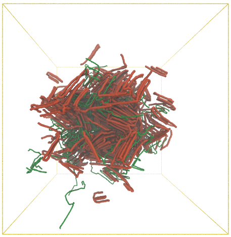

You have run your simulation. Now what?
So after you managed to get your trajectories from Lammps, or other Simulation packages its time to create nice vizualizations. In this blog entry I will cover how do I use VMD and Lammps together.
Making Lammps to output trajectory files
In Lammps I use this command to produce trajectory files:
dump dump_traj all dcd 20000 traj.dcd
dump_modify dump_traj sort id unwrap yes
write_data traj.data
It will produce a .dcd file which will contain information about position of atoms for each timestep. The best part about .dcd format is that it is already binary, therefore takes about 5 times less space on your hard drive than ASCII files. Also it can be read by almost every MD trajectory processing software packages such as [vmd] and [mdanalysis] .
Vizualizing your trajectory:
  To visualize your trajectory one needs to give VMD information about bonds in the system, by providing VMD with .psf files, i.e bond information files. Here comes handy the .data file: traj.data and [topotools] :
topo readlammpsdata traj.data molecular
animate write psf traj.psf
And now we can use VMD to visualize the results:
mol load psf traj.psf
animate read dcd traj.dcd
I wrote a simple python script to produce .psf file out of data file.
#!/usr/bin/env python
import os
import argparse
def create_psf(args):
"""
given data file produce psf file if it doesn't exist yet
if it does then use it
"""
if not os.path.exists(os.path.abspath(args.psffile)):
psffile = os.path.splitext(args.psffile)[0]
PSF = psffile+'.psf'
DCD = os.path.splitext(args.traj)[0] + '.dcd'
DATA = os.path.splitext(args.datafile)[0] + '.data'
vmdscript = "create_psf.vmd"
# write VMD loader script
parameters = {'vmdfile': vmdscript,
'topology': PSF,
'datafile': DATA,
'trajectory': DCD,
'trajskip':args.trajskip}
script = """\
package require topotools
topo readlammpsdata "{0[datafile]}" angle
animate write psf "{0[topology]}"
exit
""".format(parameters)
with open(vmdscript, 'w') as tcl:
tcl.write(script+'\n')
#os.system("vmd -dispdev text -e {0[vmdfile]}".format(parameters))
print "Wrote VMD script {0} ".format(vmdscript)
print "If there is an error with {0}: 'source {0}' to load everything manually, then repeat ".format(vmdscript)
print "running the python script with explicict parameters that were generated".format(vmdscript)
else:
print "the file %s already exists" % args.psffile
return args
def main():
parser = argparse.ArgumentParser(description=\_\_doc\_\_,
formatter_class=argparse.ArgumentDefaultsHelpFormatter)
parser.add_argument("-f", "--psf", dest="psffile",
help="Name of the future files, all other files will start with FILE",
metavar="FILE")
parser.add_argument("-d", "--data", dest="datafile",
default="./figures/polymer_0.8.data",
# type=lambda x: is_valid_file(parser, x),
help="read datafile and if exists then convert it to psf file by invoking a vmd script",
metavar="FILE")
parser.add_argument("-t", "--trajectroy", dest="traj",
default="quenchsim.dcd",
help="Input trajectory file)", metavar="FILE")
parser.add_argument("-s", "--trajskip", dest="trajskip",
default=40,
type=int,
help="How many steps are to be skipped when trajectory \
file is being red\
(needs to be > 1, < number of frames) \
type (default: %(default)s)")
parser.add_argument("-e", "--endframe", dest="endframe",
default=-1,
type=int,
help="End frame of the trajectory file type (default: %(default)s)")
parser.add_argument("-st",
"--startframe",
dest="startframe",
default=0,
type=int,
help="Start frame of the trajectory file type (default: %(default)s)")
args = parser.parse_args()
args = create_psf(args)
return None
if __name__ == '__main__':
main()
Just run this commands to run the script:
$python test.py -h
usage: test.py [-h] [-f FILE] [-d FILE] [-t FILE] [-s TRAJSKIP] [-e ENDFRAME]
[-st STARTFRAME]
optional arguments:
-h, --help show this help message and exit
-f FILE, --psf FILE Name of the future files, all other files will start
with FILE (default: None)
-d FILE, --data FILE read datafile and if exists then convert it to psf
file by invoking a vmd script (default:
./figures/polymer_0.8.data)
-t FILE, --trajectroy FILE
Input trajectory file) (default: quenchsim.dcd)
-s TRAJSKIP, --trajskip TRAJSKIP
How many steps are to be skipped when trajectory file
is being red (needs to be > 1, < number of frames)
type (default: 40)
-e ENDFRAME, --endframe ENDFRAME
End frame of the trajectory file type (default: -1)
-st STARTFRAME, --startframe STARTFRAME
Start frame of the trajectory file type (default: 0)
| [topotools] | Topotools: https://sites.google.com/site/akohlmey/software/topotools |
| [mdanalysis] | MDAnalysis: https://code.google.com/p/mdanalysis/ |
| [vmd] | VMD: http://www.ks.uiuc.edu/Research/vmd/ |
comments powered by Disqus